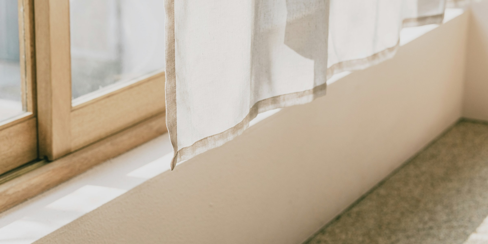

공간을 바꾸는 감각에
명확한 이유를 붙입니다.
벽을 허물고 바닥을 새로 깔지 않아도, 창가의 패브릭과 빛, 공간의 색이 정확히 맞물리면 집의 인상은 완전히 달라집니다. 다만 수많은 원단 중 내 공간에 무엇이 가장 부합하는지 막연한 눈대중만으로 알아채기는 쉽지 않습니다.
그래서 리담은 감각의 영역에 머물던 선택 과정을 측정 가능한 기준으로 바꾸고, 모든 제안 위에 명확한 이유를 붙입니다. 커튼은 리담이 공간을 새롭게 정의하는 첫걸음입니다.

지향하는 공간의 인상마다
설계하는 기준이 다릅니다.


- 확장감넓어 보이는 공간벽면의 명도와 채도에 커튼 톤을 정밀하게 일치시켜, 시선이 끊기지 않고 창가가 하나의 넓은 벽처럼 이어지게 설계합니다.
- 포인트시선이 머무는 공간벽이나 바닥재와 계산된 대비를 이루는 채도와 명도를 부여하여, 공간에 들어섰을 때 시선이 자연스럽게 창가로 집중되도록 유도합니다.
- 온기포근함이 머무는 공간색상보다 표면의 직조감을 우선합니다. 빛이 닿았을 때 가장자리가 부드럽게 산란되는 매트하고 보송한 결의 패브릭을 제안합니다.
- 채광밝고 환한 공간창이 향한 방위와 낮 시간대의 빛을 살펴, 외부 시선은 정돈하면서도 자연광을 실내 깊숙이 확산시키는 속지를 매칭합니다.
- 밀도무게감 있고 고급스러운 공간바닥재와 가구의 물성을 고려해, 주름의 형태가 탄탄하게 잡히고 빛의 각도에 따라 은은한 윤기가 감도는 원단을 배치합니다.
- 밤아늑한 공간해가 진 뒤 실내 간접 조명의 색온도와 어우러질 때, 차갑게 들뜨지 않고 공간을 차분하게 감싸 안는 톤다운 패브릭을 선정합니다.

기준,
한 사람의 감에
기대지 않는 데이터.
벽과 바닥, 가구, 그리고 다루는 모든 원단의 색상 값을 측정해 데이터로 구축해 두었습니다. 어떤 공간 조건에서 어떤 배색 방식을 택해야 고객이 원하는 분위기에 정확히 도달하는지 명확한 설계 기준을 따릅니다. 그날의 기분이나 상담가의 주관적인 감에 결과를 맡기지 않기 위해서입니다.